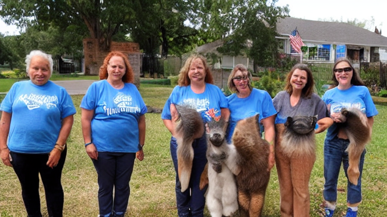

Rescatamos, cuidamos y buscamos hogar para animales que lo necesitan.
Adopción responsable, atención veterinaria y acompañamiento para que cada historia termine en familia.

La realidad que afrontamos cada día

- Abandonos y camadas no deseadas que saturan refugios.
- Falta de recursos para alimento, medicación y esterilizaciones.
- Animales con miedo que necesitan socialización y calma.
- Adopciones sin seguimiento que acaban en devoluciones.
- Escasez de voluntariado estable y casas de acogida.
Nuestra forma de ayudar

Trabajamos con un enfoque integral: rescate, veterinaria, socialización y adopción responsable, acompañando a las familias para asegurar una adaptación positiva y duradera.
- Atención veterinaria desde el primer día.
- Procesos de adopción claros y con asesoramiento.
- Red de acogidas y voluntariado para dar oportunidades reales.
Qué hacemos

Rescate y acogida
Actuamos ante avisos y buscamos hogares temporales seguros.
Atención veterinaria
Vacunas, curas, desparasitación y esterilización cuando corresponde.
Rehabilitación
Socialización y apoyo para superar miedos.
Adopción responsable
Entrevista, contrato y seguimiento.
Impacto real

- Más rescates y más adopciones seguras.
- Menos devoluciones gracias al acompañamiento.
- Mejor bienestar animal con atención veterinaria.
- Comunidad local implicada y solidaria.
- Transparencia en el uso de donaciones.